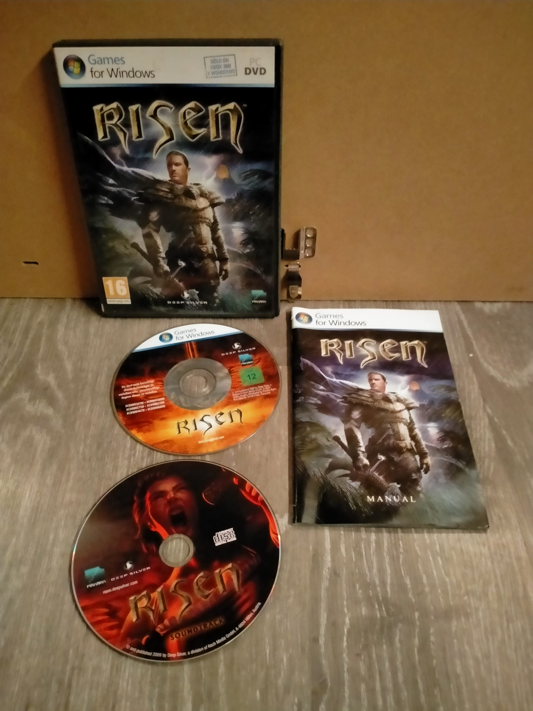

Ficha #000000
Risen
Juego de rol de acción ambientado en una isla volcánica llena de ruinas antiguas, criaturas peligrosas y misterios sobrenaturales. En Risen el jugador controla a un náufrago que debe abrirse camino en un mundo abierto donde diferentes facciones compiten por el control del territorio. Las decisiones del jugador influyen en la historia y en las alianzas disponibles, mientras se desarrollan habilidades de combate, magia y supervivencia. El título mantiene el estilo clásico de los RPG europeos con gran libertad de exploración y múltiples formas de resolver las misiones.
- Formato
- DVD Case
- Plataforma
- WinXP Windows Vista Win7
- Género
- Rol RPG Acción Fantasía
- Serie
- Todos DVD Case Games for windows
- Desarrollador
- Piranha Bytes
- Distribuidor
- Deep Silver
- EAN
- —
Contenido de la edición
- Pendiente de documentación.
Preservación
- Protección
- No determinado
- Formato recomendado
- No aplica
- Jugable en virtualización
- No determinado
Pendiente de documentación